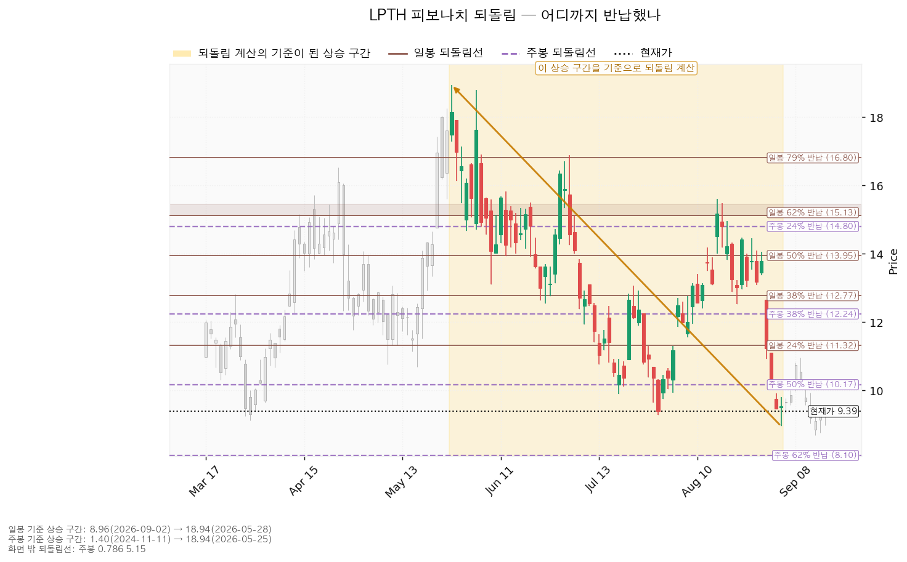
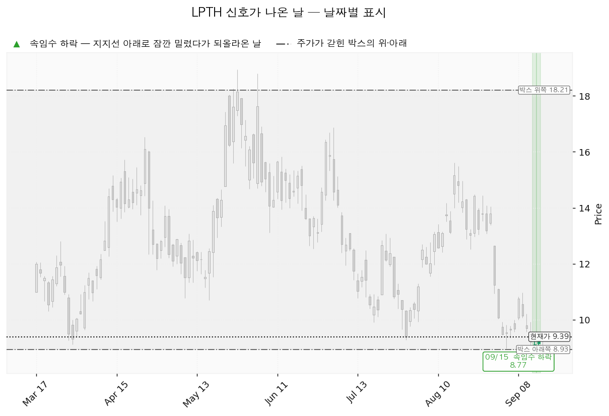
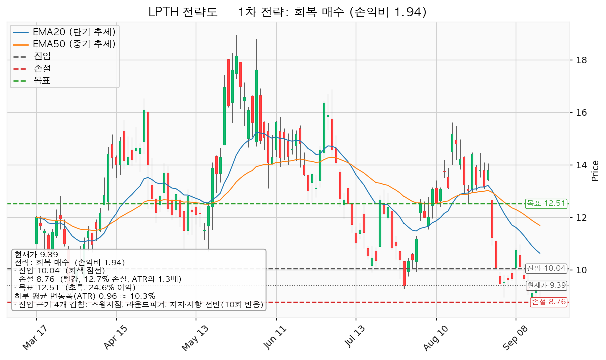
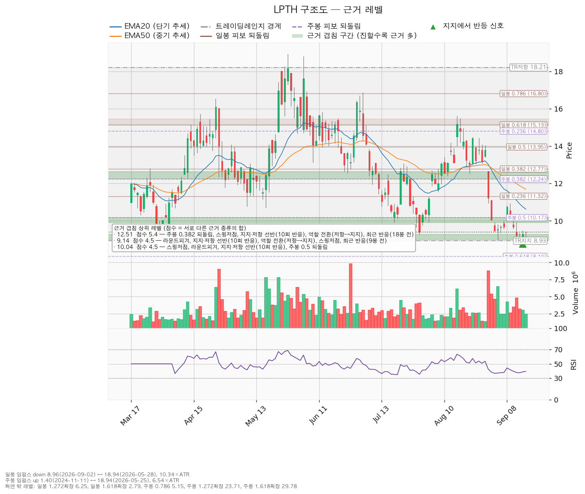

현재가 9.39달러(2026-09-16 종가), 하루 평균 변동폭(ATR) 0.9649달러 기준입니다.
| 구분 | 가격 | 판정 방식 | 현재가 대비 | 상태 |
|---|---|---|---|---|
| 회복선(진입 조건) | 10.04달러 | 일봉 종가로 회복한 뒤 되돌림에서 지지되는지 | +6.9% (하루 평균 변동폭의 0.67배) | 회복 대기 — 9월 9일 이후 종가로 넘은 적 없음 |
| 집행 손절 | 8.76달러 | 장중 저가 터치 시 집행 | -6.7% | 10.04달러에 새로 진입한 경우에만 유효합니다. 지금 들고 계신 200주에는 적용되지 않습니다 |
| 관망 종료 기준 | 9.00달러 / 날짜 조건 2026-11-13 | 일봉 종가가 9.00달러(아래쪽 겹침 구간 9.00~9.28달러의 바닥) 아래로 마감하면 신규 진입 계획을 접습니다. 날짜 조건은 다음 실적일입니다 | -4.2% (하루 평균 변동폭의 0.40배) | 유지 중 |
| 확인선 | 12.51달러 | 일봉 종가 돌파 후 되돌림에서 지지되는지 | +33.2% (하루 평균 변동폭의 3.23배) | 미돌파 |
| 폐기선(구조) | 8.93달러 | 종가 이탈 후 3거래일 내 회복 실패(또는 그 전에 7.97달러 아래 종가 마감) + 반등에서 저항으로 확인 | -4.9% (하루 평균 변동폭의 0.48배) | 유지 중 |
① 직전 트리거의 성적표 — 9.38달러 회복 조건이 기한 마지막 날에 충족됐습니다.
| 직전이 건 조건 | 가격 | 실제(9/15~9/16) | 판정 |
|---|---|---|---|
| 9.38달러 — 9월 16일 종가까지 회복 | 9.38 | 9/15 종가 9.29, 9/16 종가 9.39 | 충족 — 2단계(경고)로 넘어가지 않고 관찰 단계 해제 |
| 회복선 — 10.04달러 종가 회복 | 10.04 | 그 사이 최고 종가 9.39 | 미충족 — 진입 성립하지 않음 |
| 관망 종료 기준·폐기선 — 8.93달러 종가 이탈 | 8.93 | 9/15 저가 8.77, 9/16 저가 8.985였으나 종가는 9.29·9.39 | 미충족(장중 이탈은 판정 대상이 아님) |
| 집행 손절 — 8.68달러 장중 터치 | 8.68 | 9/15 저가 8.77 | 미체결 |
| 목표·확인선 11.99달러 | 11.99 | 그 사이 최고가 9.49 | 미도달 |
| 1차 목표 11.02달러 | 11.02 | 미도달 | 미도달 |
| 폐기 시 다음 지지 8.10달러 | 8.10 | 미도달 | 미도달 |
진입 조건이 충족되지 않았으므로 목표·손절 중 어디에 먼저 닿았는지를 따질 단계는 오지 않았습니다. 9월 11일 종가로 시작된 관찰 단계는 9월 16일 종가 회복으로 종료됐고, 이 리포트부터 9.38달러는 더 이상 판정 대상이 아닙니다.
② 좌표의 이동 — 50일 지수이동평균이 아래로 내려오면서 위쪽 겹침 구간의 1순위가 바뀌었습니다.
| 좌표 | 직전(09-15) | 이번(09-17) | 왜 움직였나 |
|---|---|---|---|
| 회복선 | 10.04달러 | 10.04달러 | 같습니다. 9.90~10.17달러 선반이 그대로입니다(10회 반응) |
| 확인선 · 목표 | 11.99달러 | 12.51달러 | 50일 지수이동평균이 11.87 → 11.69달러로 내려오며 11.87~12.24달러 구간에서 떨어져 나갔고, 그 구간의 점수가 5.8 → 3.2점으로 낮아졌습니다. 대신 주봉 0.382 되돌림 12.24 + 선반 12.635 + 역할 전환이 모인 12.24~12.635달러 구간(5.4점)이 1순위가 됐습니다 |
| 집행 손절 | 8.68달러 | 8.76달러 | 진입 아래 겹침 구간의 바닥이 8.93 → 9.00달러로 올라간 만큼 함께 올라왔습니다. 박스 하단 8.93이 그 구간에서 분리돼 8.50~8.96달러 구간(3.5점)을 따로 이뤘기 때문입니다 |
| 관망 종료 기준 | 8.93달러 | 9.00달러 | 같은 이유로 아래쪽 겹침 구간의 바닥이 올라왔습니다 |
| 폐기선 | 8.93달러 | 8.93달러 | 같습니다. 180봉 박스 하단이 그대로입니다 |
| 손익비 | 1:1.43 | 1:1.94 | 진입과 손절 폭은 거의 그대로인데 목표가 11.99 → 12.51달러로 올라갔습니다 |
| 하루 평균 변동폭 | 1.0284달러 | 0.9649달러 | 계속 줄고 있습니다 |
| 비중 | 계좌의 7.4% | 계좌의 7.8% | 손절 폭이 13.56% → 12.75%로 좁아진 만큼 늘었습니다 |
손익비가 1.43에서 1.94로 올라간 것은 구조가 좋아져서가 아니라 목표로 쓰는 겹침 구간이 0.52달러 위로 바뀌었기 때문입니다. 진입 10.04달러와 손절 근거는 직전과 같습니다.
③ 판단은 바뀌지 않았습니다. 직전과 같이 보유 유지 + 10.04달러 종가 회복 시에만 신규 매수입니다. 달라진 것은 9.38달러 판정이 해제됐다는 점과 목표·확인선이 12.51달러로 올라갔다는 점입니다. 직전 리포트에서 정정한 내용(9월 11일 실적 이후 추정치가 위로 움직여 배수 수축이라는 판정)은 이번 조회에서도 유지됩니다.
라이트패스 테크놀로지스(LPTH)는 열화상 카메라와 산업용 계측기에 들어가는 적외선 광학 렌즈·광학 조립체를 만드는 미국 기업입니다.
| 항목 | 값 |
|---|---|
| 현재가 | 9.39달러 (2026-09-16 종가, 9월 14일 종가 대비 +3.1%) |
| EMA20 / EMA50 (20일·50일 지수이동평균) | 10.63 / 11.69달러 — 각각 현재가보다 하루 평균 변동폭의 1.28배·2.38배 위에 있습니다 |
| RSI(14) (0~100 사이의 과열·침체 지표) | 39.5 — 약세 구간이며 통상적 과매도 기준선 30 아래는 아닙니다(직전 37.4에서 올라왔습니다) |
| ATR (하루 평균 변동폭) | 0.9649달러 = 주가의 10.28% |
| 국면 판정 | 횡보 레인지(구조 유지 — 하단 사수 조건부), 추세는 하락 |
| 관측 항목 | 값 |
|---|---|
| 지지 테스트별 매도 거래량 (평균 대비) | 3/12 0.58배 → 3/20 1.07배 → 3/30 0.92배 → 7/17 0.64배 → 7/29 1.43배 → 9/14 0.92배 — 추세는 증가 |
| 박스 안 저점 | 10.30 → 10.31 → 9.12 → 9.90 → 9.28 → 8.70달러 — 절하 |
| 상승봉 대 하락봉 거래량비 | 1.11 (직전과 같습니다) |
세 항목 모두 직전 리포트와 같은 값입니다. 9월 15·16일 이틀 동안 이 관측치를 바꿀 만한 새 지지 테스트는 기록되지 않았습니다.
일봉과 주봉 모두 계산 가능한 구간이 있었습니다. 일봉은 5월 고점에서 9월 저점까지의 하락 구간이 기준이므로 되돌림선은 "하락분의 얼마를 되돌렸나"를 뜻하고, 주봉은 상승 구간이 기준이므로 "상승분의 얼마를 반납했나"를 뜻합니다.
| 기준 | 구간 | 0.236 | 0.382 | 0.5 | 0.618 |
|---|---|---|---|---|---|
| 일봉(하락) | 2026-05-28 18.94달러 → 2026-09-02 8.96달러 | 11.32 | 12.77 | 13.95 | 15.13 |
| 주봉(상승) | 2024-11-11 1.40달러 → 2026-05-25 18.94달러 | 14.80 | 12.24 | 10.17 | 8.10 |

| 날짜 | 신호 | 가격 | 해석 |
|---|---|---|---|
| 2026-09-14 | spring(속임수 하락) | 8.70달러 | 박스 하단 8.93달러 아래로 장중에 내려갔다가 종가 9.11달러로 되돌아 올라온 움직임입니다 |
| 2026-09-15 | spring(속임수 하락) | 8.77달러 | 같은 움직임이 이틀 연속입니다. 종가는 9.29달러 |
이틀 연속 박스 하단 아래를 찍고 종가로 되올라왔고, 그다음 날인 9월 16일 종가는 9.39달러로 직전 리포트가 건 9.38달러를 넘었습니다. 여기까지는 매도 물량이 소진되는 쪽에 부합하는 움직임입니다. 다만 두 신호일의 거래량은 평균의 0.92배(9/14)로 크지 않았고, 9월 16일 거래량은 248만 주로 그 이틀(327만·309만 주)보다 오히려 줄었습니다. 되올라온 것은 맞지만 그 되올라옴에 거래량이 붙지 않았으므로, 회복선 10.04달러 종가 확인 없이는 진입 근거가 되지 않습니다. 국면 후보는 매집으로 나오지만 박스 안쪽 판정이 중립이므로 아직 결론에 이르지 않았습니다.

성립하는 셋업은 reclaim_long(회복 후 롱 전환) 하나뿐입니다. 되돌림 저가매수 셋업과 지지 확인 매수 셋업은 산출되지 않았습니다. 유효 박스가 있고 현재가 9.39달러가 지지 선반(9.00~9.28달러, 10회 반응) 바로 위에 있는데도 지지 확인 매수가 나오지 않은 것은, 박스 안쪽 판정이 매집 우위가 아니라 중립에 머물렀기 때문입니다.
| 항목 | 내용 |
|---|---|
| 이름 / 방향 | reclaim_long / 롱 |
| 진입 | 10.04달러 — 일봉 종가로 회복한 뒤 |
| 진입 근거 (겹침 4.5점) | 스윙저점 + 라운드피겨 + 지지·저항 선반(10회 반응) + 주봉 0.5 되돌림 / 구간 9.90~10.17달러 |
| 손절 | 8.76달러 (진입 대비 -12.75%, 하루 평균 변동폭의 1.33배) |
| 손절 근거 | 근거 겹침 구간(9.00~9.28달러, 4.5점) 바로 아래에 두었습니다. 구간 안쪽이 아니라 아래에 둔 만큼 손절 폭이 넓어졌고 그만큼 손익비가 낮아졌습니다 |
| 목표 | 12.51달러 (진입 대비 +24.6%) |
| 목표 근거 (겹침 5.4점) | 주봉 0.382 되돌림 + 스윙저점 + 지지·저항 선반(10회 반응) + 역할 전환(저항→지지) + 최근 반응(18봉 전) / 구간 12.24~12.635달러 |
| 손익비 | 1:1.94 (손절 폭 1.33 ATR) |
| 구조적 손절 기준 손익비 | 1:1.94 — 위와 같습니다. 손절 8.76달러는 이미 겹침 구간 아래에 둔 구조적 손절이므로, 손절을 하루 변동폭 안으로 조여서 얻은 손익비가 아닙니다 |
| 구조 증명도 | 회복 확인형 (가중치 1.0) — 저항을 종가로 되찾은 뒤에만 들어가므로 진입가는 불리하지만 구조가 먼저 증명됩니다 |
| 엣지의 종류 | 모멘텀 — "저항을 종가로 되찾으면 그 방향이 이어진다"는 전제입니다. 자주 틀리고 소수가 크게 맞는 유형이며 승률을 기대하는 셋업이 아닙니다(이 유형의 일반적 성격이며 이 엔진에서 측정한 값이 아닙니다) |
| 청산 | 목표 12.51달러에서 전량입니다. 트레일링은 걸지 않습니다 |
| 비중 | 계좌의 7.8%. 1회 매매 손실 한도 1%를 손절 폭 12.75%로 나눈 값이며, 한 종목 상한 13%보다 낮습니다 |
대표 셋업 선정 이유: 손익비 1.94 × 구조 증명도(회복 확인형) × 근거 겹침 4.5점으로 선정했습니다. 산출된 셋업이 하나뿐이므로 손익비 1등과의 트레이드오프 문제는 생기지 않습니다. 손익비가 1을 넘으므로 보류 대상도 아닙니다.
모멘텀 전제에 고정 목표를 붙인 점: 진입 근거는 모멘텀이지만 집행은 박스 규칙을 따릅니다 — 손절은 구조 아래에 두고, 목표 12.51달러에서 전량 청산하며, 트레일링은 걸지 않습니다. 12.51달러 위 구간은 이 포지션의 연장이 아니라 새 셋업으로 다시 잡습니다.
분할하지 않는 이유: 1차 목표 10.74달러에서 50%를 익절하고 잔여분 손절을 진입가 10.04달러로 올린 뒤 2차 목표 12.51달러에서 나머지를 파는 안도 함께 산출됐습니다. 1차 청산의 손익비가 0.55에 그쳐 전 구간을 합친 손익비가 1.94에서 1.25로 내려가고, 1차 청산 뒤 본전 손절에 걸리면 0.28까지 떨어집니다. 헤드라인 손익비 1.94는 12.51달러 전량 청산에서만 성립하므로, 이 리포트는 전량 청산 하나만 계획으로 냅니다.

평단 13.1821달러에 200주, 취득원가 2,636달러입니다. 현재가 9.39달러 기준 평가액 1,878달러, 평가손익 -758달러(-28.8%) 입니다(직전 리포트 -814달러 / -30.9%에서 줄었습니다). 이 물량은 이번 셋업의 진입 10.04달러와 무관하게 이미 들어가 있는 포지션이므로, 판정 기준을 따로 적습니다.
| 가격 | 이 물량에 일어나는 일 |
|---|---|
| 9.00달러 일봉 종가 이탈 | 신규 매수 계획을 접습니다. 보유 200주는 유지합니다 |
| 8.93달러 일봉 종가 이탈 + 3단계 확인 | 200주 전량 정리. 그 가격에서의 평가손익은 -850달러(-32.3%)입니다 |
| 10.04달러 종가 회복 | 신규 매수 조건 성립. 그 가격에서 보유분 평가손익은 -628달러(-23.8%) |
| 12.51달러 도달 | 평가손익 -134달러(-5.1%). 확인선이므로 여기서 다시 판단합니다 |
진입 10.04달러가 현재가 9.39달러보다 +6.9% 위에 있으므로, 현재가에서 사는 것은 이 계획에 들어 있지 않습니다. 10.04달러 일봉 종가가 나올 때까지 기다리십시오.
이 종목의 하루 평균 변동폭은 주가의 10.28%로 8%를 넘습니다. 손절 폭 12.75%는 그보다 넓으므로(1.33배) 논지와 무관한 일상적 흔들림만으로 손절에 닿을 가능성은 낮습니다. 다만 손절 폭 자체가 12%를 넘기 때문에 비중이 계좌의 7.8%로 제한되는 것이며, 이 비중은 그 넓은 손절 폭에서 나온 값입니다.
진입에서 목표까지는 2.47달러로 하루 평균 변동폭의 2.56배입니다. 트레일링을 검토할 만한 폭(2배 이상, 관행적 기준이지 정설은 아닙니다)은 넘지만, 집행 정책상 트레일링은 걸지 않고 12.51달러에서 전량 청산합니다. 그 위 구간은 새 셋업으로 다시 잡습니다.
확인선과 대표 셋업의 목표가 같은 12.51달러인 것은 모순이 아니라 분기입니다.
박스 상단 18.21달러는 맥락으로만 적습니다. 현재가에서 하루 평균 변동폭의 9.14배 위에 있어 실행 좌표가 되지 못합니다.
| 단계 | 트리거 | 의미 | 행동 |
|---|---|---|---|
| ① 관찰 | 일봉 종가가 10.04달러 아래로 마감 | 구조 이탈의 시작일 뿐 무효가 아닙니다. 되돌아 올라오면 오히려 속임수 하락일 수 있습니다 | 신규 진입만 중단하고, 집행 손절은 그대로 둡니다 |
| ② 경고 | 이탈 후 3거래일 안에 10.04달러를 종가로 회복하지 못하거나, 그 전에 일봉 종가가 9.08달러 아래로 마감(하루 평균 변동폭의 1배만큼 더 밀림) — 둘 중 먼저 오는 쪽 | 저항 회복 실패 가능성이 우세해집니다 | 잔여 비중 축소. 반등이 나오면 이 가격에서의 반응을 확인합니다 |
| ③ 무효 | 반등이 10.04달러에서 막히고 그 아래로 되밀림(지지가 저항으로 전환) | 셋업 폐기 — 구조 해석이 틀린 것으로 확정 | 포지션 정리 후 새 구조가 만들어질 때까지 관망 |
집행 손절 8.76달러는 이 3단계 판정과 무관하게 별도로 작동합니다. 그리고 장중 일시 이탈은 어느 단계에도 해당하지 않습니다 — 9월 15일 저가 8.77달러가 그 예이며, 그날 종가는 9.29달러로 마감해 어느 단계에도 들어가지 않았습니다.
폐기선 8.93달러는 종가로 이탈된 적이 없으므로 어느 단계에도 들어가 있지 않습니다. 직전 리포트가 걸어 둔 9.38달러 판정은 9월 16일 종가 9.39달러로 해제됐습니다.
폐기선 8.93달러는 현재가에서 하루 평균 변동폭의 0.48배 거리라 실무적으로 작동합니다. 다만 이 종목의 논지는 가격만으로 결판나지 않습니다. 2026년 11월 13일 실적에서 아래가 나오면 가격이 어디에 있든 롱 전환 논지를 접습니다.
1. 영업활동 현금흐름이 또 음수로 나오는 경우 — 2026년 6월 결산 기준 -1,023만 달러입니다. 다시 유출이면 설비투자가 앞선 적자가 아니라 본업의 적자입니다. 2. 설비투자 급증이 매출로 돌아오지 않는 경우 — 설비투자가 126만 → 627만 달러로 +396.6% 늘었습니다. 이 투자가 매출 증가로 이어지지 않고 잉여현금흐름 적자만 키우면, 확장 투자가 아니라 유지 비용이 커진 것으로 봅니다. 3. 올해 주당순이익 컨센서스 -0.05달러 경로가 다시 아래로 수정되는 경우 — 9월 11일 실적으로 -0.155달러에서 -0.05달러로 개선된 경로가 되돌아가면, 가격 하락을 배수 수축으로 본 판정의 근거가 사라집니다.
조건: 10.04달러 종가 회복 후 지지 확인 → 12.51달러 종가 돌파 구조: 9월 14·15일 속임수 하락이 진짜였음이 확인되고 → 거래량을 동반한 상승이 나온 뒤 → 되돌림에서 지지를 확인하고 → 상승 국면으로 넘어가는 순서입니다 행동: 10.04달러 회복과 지지를 확인한 뒤 신규 진입은 계좌의 7.8%까지(보유 평가액이 이미 계좌의 13%를 넘으면 추가하지 않습니다), 12.51달러 돌파 시에는 새 셋업으로 다시 잡습니다
조건: 8.93달러를 지키면서 12.51달러 아래 박스에 머무름 구조: 구조는 그대로 유지되는 상태입니다. 매물을 소화하는 데 시간이 필요한 국면이며, 부정적 신호가 아닙니다 행동: 보유 200주를 유지하고 신규 진입은 보류하면서 아래 세 가지를 추적합니다
| 추적 항목 | 좋아지는 모습 | 현재 관측치 |
|---|---|---|
| 지지 테스트 거래량 | 테스트를 반복할수록 매도 거래량이 줄어듦 | 증가 (0.58 → 1.07 → 0.92 → 0.64 → 1.43 → 0.92배) |
| 박스 안 저점 | 저점이 절상됨 | 절하 (10.30 → 10.31 → 9.12 → 9.90 → 9.28 → 8.70달러) |
| 상승봉 대 하락봉 거래량비 | 1보다 뚜렷하게 커짐 | 1.11 (직전과 같습니다) |
세 값 모두 직전 리포트에서 바뀌지 않았습니다. 다음 지지 테스트가 나올 때 이 세 값이 어떻게 바뀌는지 확인하십시오.
조건: 8.93달러 종가 이탈 후 3거래일 내 회복 실패(또는 그 전에 7.97달러 아래로 종가 마감) + 반등에서 8.93달러가 저항으로 확인 구조: 물량을 다시 모으던 구간이 아니라 모아둔 물량을 넘기던 구간이었다는 뜻이며, 추가 저점 갱신 가능성을 엽니다 행동: 보유 200주를 전량 정리하고, 아래쪽 다음 가격대인 8.00~8.10달러 구간(라운드피겨 + 주봉 0.618 되돌림, 2.1점)에서 새 박스가 만들어지는지 지켜봅니다
점수는 서로 다른 근거 종류의 가중치 합입니다. 같은 종류가 여러 개 붙어도 한 번만 가산되므로, 점수가 높다는 것은 성격이 다른 근거들이 같은 가격대에 모여 있다는 뜻입니다.
| 가격 | 구간 | 점수 | 근거 |
|---|---|---|---|
| 12.51달러 | 12.24~12.635 | 5.4 | 주봉 0.382 되돌림, 스윙저점, 선반(10회 반응), 역할 전환(저항→지지), 최근 반응(18봉 전) |
| 9.14달러 | 9.00~9.28 | 4.5 | 라운드피겨, 선반(10회 반응), 역할 전환(저항→지지), 스윙저점, 최근 반응(9봉 전) |
| 10.04달러 | 9.90~10.17 | 4.5 | 스윙저점, 라운드피겨, 선반(10회 반응), 주봉 0.5 되돌림 |
| 10.74달러 | 10.50~10.96 | 4.5 | 라운드피겨, EMA20, 선반(9회 반응), 스윙고점, 최근 반응(5봉 전) |
| 12.98달러 | 12.77~13.09 | 3.9 | 일봉 0.382 되돌림, 스윙고점, 선반(11회 반응), 최근 반응(18봉 전) |
| 8.80달러 | 8.50~8.96 | 3.5 | 라운드피겨, 박스 하단, 스윙저점, 최근 반응(9봉 전) |
| 11.84달러 | 11.69~11.92 | 3.2 | EMA50, 선반(8회 반응), 역할 전환(저항→지지) |
| 8.05달러 | 8.00~8.10 | 2.1 | 라운드피겨, 주봉 0.618 되돌림 |
현재가 9.39달러는 9.14달러 구간(4.5점)의 위쪽 경계 9.28달러 바로 위에 있습니다. 직전 리포트에서는 그 구간 안쪽이었고, 이틀 사이 위로 나왔습니다. 위로는 9.28달러에서 9.90달러까지 0.62달러(하루 평균 변동폭의 0.64배) 사이에 근거가 겹치는 가격대가 없고, 아래로는 8.93달러를 종가로 잃으면 8.00~8.10달러까지 0.88달러(하루 평균 변동폭의 0.91배) 사이에 받칠 가격대가 없습니다.
역할 전환 표시가 붙은 구간들은 과거 저항이던 자리가 지지로 바뀐 곳이므로, 다시 저항으로 되돌아갈 수도 있는 가격대입니다.

| 항목 | 값 |
|---|---|
| 애널리스트 수 / 추천등급 | 5명 / strong_buy |
| 목표주가 (평균 / 최저 / 최고) | 15.80 / 15.00 / 17.00달러 |
| 후행 PER (주가 ÷ 지난 1년 주당순이익) | 산출 불가 (후행 주당순이익 -0.38달러, 적자) |
| 선행 PER (주가 ÷ 앞으로 1년 주당순이익 추정치) | 85.4배 (선행 주당순이익 0.11달러) |
| 올해 주당순이익 컨센서스 | -0.05달러 (범위 -0.05 ~ -0.02), 전년 대비 적자 폭 -89.4% 축소 |
| 내년 주당순이익 컨센서스 | +0.16달러 (전년 대비 +142.1%) — 직전 리포트에서는 조회되지 않던 값이 이번에 채워졌습니다 |
| 다음 실적일 | 2026-11-13 |
(a) 배수 두 가지를 함께 봅니다. 후행 PER은 적자라 산출되지 않고, 선행 PER 85.4배는 선행 주당순이익 0.11달러라는 작은 분모에서 나온 값입니다. 직전 조회의 82.8배에서 85.4배로 올라간 것은 추정치가 내려가서가 아니라 가격이 9.11 → 9.39달러로 올랐기 때문입니다. 85.4배는 이익으로 정당화되는 수준이 아니며, 이 종목은 이익 배수로 비싸다·싸다를 판정할 단계가 아닙니다. 올해 적자 컨센서스 -0.05달러가 내년 +0.16달러로 넘어가는지가 볼 것입니다.
(b) 목표주가는 분포로 봅니다. 평균 15.80달러, 최저 15.00달러, 최고 17.00달러, 애널리스트 5명입니다. 현재가 9.39달러는 5명 전원의 목표 가운데 가장 낮은 15.00달러보다도 아래입니다. 다섯 명 전부가 틀렸거나, 아직 목표를 고치지 않았거나 둘 중 하나입니다. 9월 11일 실적 발표 이후에도 최저·최고가 그대로라는 점은 이번 실적으로 목표를 바꾼 애널리스트가 많지 않다는 뜻으로 읽힙니다.
(c) 추정치 방향과 가격 방향 — 배수 수축이 유지됩니다.
| 항목 | 09-11 | 09-15 | 이번(09-17) |
|---|---|---|---|
| 후행 주당순이익 | -0.50달러 | -0.38달러 | -0.38달러 |
| 올해 주당순이익 컨센서스 | -0.155달러 | -0.05달러 | -0.05달러 |
| 선행 주당순이익 | +0.02달러 | +0.11달러 | +0.11달러 |
| 내년 주당순이익 컨센서스 | 조회 안 됨 | 조회 안 됨 | +0.16달러 |
| 주가 | 9.68달러 | 9.11달러 | 9.39달러 |
9월 11일 실적 이후 추정치가 올라간 상태가 그대로 유지되고 있고, 가격은 그 아래에서 +3.1% 되올라왔습니다. 추정치 하향이 동반되지 않았으므로 이 하락은 배수 수축이며 사업 전망의 하향이 아닙니다. 내년 추정치는 90일 전·30일 전 기록이 모두 0으로 남아 있어 수정 방향을 계산할 수 없습니다 — 새로 채워진 값이라 비교 대상이 없습니다.
(d) 현금흐름의 성격. 2026년 6월 결산 기준으로 영업활동 현금흐름 -1,023만 달러, 설비투자 627만 달러(전년 126만 달러에서 +396.6%), 잉여현금흐름 -1,649만 달러입니다. 세 수치는 서로 맞습니다. 영업 단계에서 현금이 나가고 있으므로 설비투자가 앞선 적자와는 성격이 다릅니다. 이익 추정치는 올라갔는데 영업 단계에서 현금은 나가고 있습니다. 11월 13일 실적의 확인 항목이 여기서 나옵니다.
(e) 상승 여력의 분해. 목표주가 평균 15.80달러를 선행 주당순이익 0.11달러로 나누면 143.6배입니다. 현재 선행 PER 85.4배와 비교하면 이 목표주가는 이익 증가가 아니라 배수가 85.4배에서 143.6배로 더 확장되는 것을 전제합니다. 현재 배수를 그대로 두고 목표 15.80달러에 닿으려면 선행 주당순이익이 지금 컨센서스의 1.7배인 0.185달러는 돼야 하고, 이는 내년 컨센서스 +0.16달러보다도 높습니다. 이 목표는 이익 전망보다 배수 수준에 의존합니다.
주도주 여부 판정: 주도주가 아닙니다. 추세는 하락이고, 현재가는 EMA20·EMA50 아래에 있으며, 박스 안 저점은 절하됐고, 영업 단계에서 현금이 나가고 있습니다. 이익 추정치가 올라오고 내년 흑자 전환 추정치가 채워진 것은 긍정적이나, 그것만으로 주도주 지위를 말할 단계가 아닙니다.
| 날짜 | 이벤트 | 볼 것 |
|---|---|---|
| 2026-11-13 | 분기 실적 발표 | ① 영업활동 현금흐름이 음수를 벗어났는지(직전 -1,023만 달러) ② 설비투자 +396.6% 증가분이 매출 증가로 돌아왔는지 ③ 올해 적자 컨센서스 -0.05달러 대비 실제치, 내년 +0.16달러 경로 유지 여부 |
이 종목은 11월 13일까지 날짜가 정해진 확인 이벤트가 이것 하나뿐입니다. 그사이의 판정은 전부 가격 조건(10.04 / 9.00 / 8.93달러)으로 이뤄집니다.
이 리포트는 정보 제공 목적이며 투자 권유가 아닙니다. 최종 판단과 책임은 투자자 본인에게 있습니다.